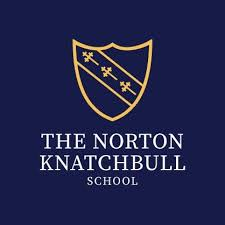

Education

University of Nottingham
Computer Science BSc Hons
2022 - 2025 (Expected)

The Norton Knatchbull School
- Computer Science - A
- Mathematics - A*
- Physics - A*
I am currently in my final year of studying computer science at the University of Nottingham. My main interests within computer science include low-level programming, programming languages, computer graphics, and simulation. I was also the team leader in my second year software engineering group project, where we worked with Feral Interactive to develop a cross platform Atari Centipede game with an abstraction layer. Coordinating my team and ensuring everyone works together to meet deadlines has been a very rewarding experience, and has greatly improved my leadership skills.
Computer Science BSc Hons
2022 - 2025 (Expected)
3D kart racing game made in C, 2nd place winner overall in the HackTheMidlands 7.0 hackathon.
Skills: Game development, Graphics, Fast delivery of an MVP
Technologies: C, SDL
2nd year software engineering group project. I was the leader of a team of 8 developers, and we worked with an external company to the university - Feral Interactive.
Skills: Leadership, Game Development
Technologies: C++, Objective-C, Cocoa, Win32, Git
Simple online multiplayer game featuring a real time chat.
Skills: Game development, Networking
Technologies: JavaScript, TypeScript, Deno, WebSockets
Minecraft clone in C#, with basic building features and collision detection.
Skills: Graphics
Technologies: C#, OpenGL
Software renderer in C, featuring OBJ model loading, multisample antialiasing (MSAA), texture mipmapping.
Skills: Graphics
Technologies: C, SDL
A compiler for a procedural language written in Haskell, for a university coursework (source cannot be shared).
Example programs: Factorial source, Factorial assembly, Fibonacci source, Fibonacci assembly
Skills: Monads, Parser combinators
Technologies: Haskell
Basic virtual machine for .NET bytecode made in Rust.
Skills: Compilers, Assembly, Low level programming, Unit testing
Technologies: Rust, C#, .NET